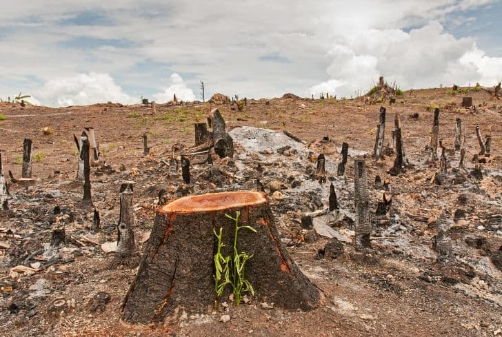
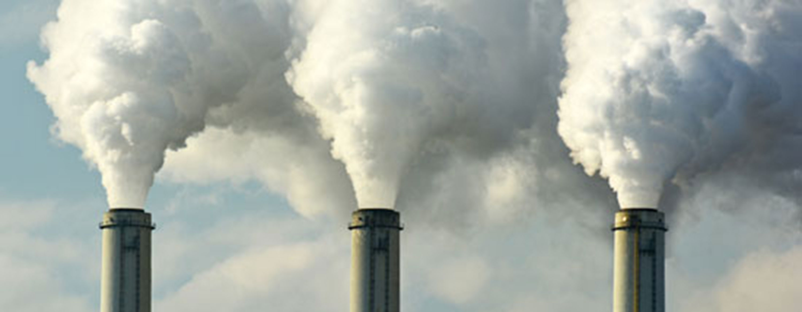
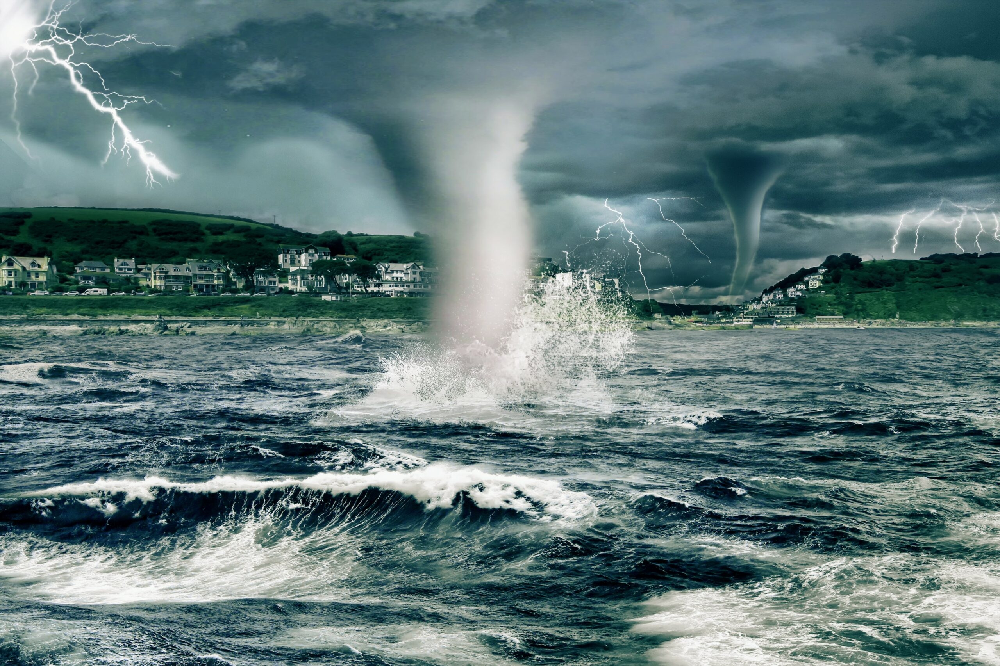
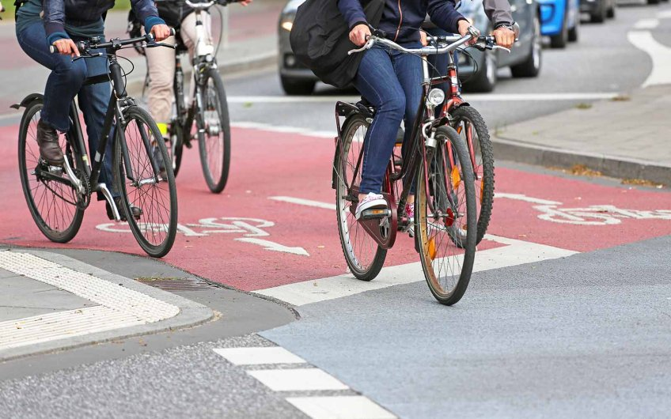

Introduction
Climate change is a pressing global issue that is reshaping the world we live in. It refers to the
long-term alteration of Earth's climate patterns, resulting in significant shifts in temperature,
weather events, and other environmental factors. Human activities, such as burning fossil fuels and
deforestation, have increased the concentration of greenhouse gases in the atmosphere, trapping heat
and causing the planet to warm up.
The consequences of climate change are far-reaching and impact various aspects of our lives,
including ecosystems, economies, and human well-being. Rising sea levels, extreme weather events,
and changes in rainfall patterns are just a few examples of the effects of climate change.
Addressing this global challenge requires collective action, sustainable practices, and the
transition to clean and renewable energy sources. By understanding the causes and impacts of climate
change, we can work towards finding solutions that protect our planet for future generations.
Causes Of Climate Change
Burning Of Fossil Fuels
The burning of fossil fuels, such as coal, oil, and natural gas, is a major contributor to climate
change. When these fuels are burned for energy, greenhouse gases, particularly carbon dioxide (CO2),
are released into the atmosphere. This excess CO2 acts as a heat-trapping blanket, leading to global
warming.
Deforestation

Deforestation, the clearing of forests for agriculture, logging, or urbanization, also plays a
significant role in climate change. Forests act as carbon sinks, absorbing CO2 from the atmosphere.
When trees are cut down, this stored carbon is released back into the air.
Industrial Activites

Industrial processes, such as manufacturing, construction, and chemical production, contribute to
climate change through the release of greenhouse gases. These activities emit gases like methane
(CH4) and nitrous oxide (N2O), which have a potent warming effect.
Agriculture & Livestock

Certain agricultural practices, such as rice cultivation and livestock farming, produce significant
amounts of methane and nitrous oxide. These gases are released during processes like paddy field
irrigation and the decomposition of organic matter.
Transportation

The transportation sector, including cars, trucks, ships, and airplanes, is a major source of
greenhouse gas emissions. The burning of fossil fuels for transportation releases CO2 and other
pollutants into the atmosphere, contributing to climate change.
Land Use Changes
Changes in land use, such as urban expansion and the conversion of forests into agricultural land,
have a significant impact on climate change. These changes alter natural carbon sinks, reduce
biodiversity, and release stored carbon into the atmosphere.
Effects Of Climate Change
Rising temperatures
One of the most noticeable impacts of climate change is the increase in global temperatures. Rising
temperatures
lead to heatwaves, melting ice caps and glaciers, and changes in weather patterns. These changes can
disrupt
ecosystems, damage crops, and threaten human health.
Extreme weather events

Climate change intensifies the frequency and severity of extreme weather events such as hurricanes,
droughts,
floods, and wildfires. These events can result in significant economic losses, displacement of
communities,
destruction of infrastructure, and loss of lives.
Changing precipitation patterns
Climate change influences precipitation patterns, causing shifts in rainfall distribution. Some
regions may
experience increased rainfall and flooding, while others face decreased rainfall and droughts. These
changes
affect water availability, agriculture, and ecosystems, impacting food production and freshwater
resources.
Sea-level rise
As global temperatures rise, glaciers and ice sheets melt, contributing to the rise in sea levels.
This poses a
major threat to coastal communities, leading to increased coastal erosion, inundation of low-lying
areas, and
saltwater intrusion into freshwater sources.
Biodiversity loss

Climate change disrupts ecosystems and threatens biodiversity. Many plant and animal species face
habitat loss,
changes in migration patterns, and increased risk of extinction. The loss of biodiversity not only
impacts
ecosystems but also affects ecosystem services and human well-being.
Health risks
Climate change exacerbates health risks for communities worldwide. Heat-related illnesses,
respiratory problems
from poor air quality, vector-borne diseases, and food and waterborne illnesses are among the health
challenges
associated with climate change.
Solutions To Climate Change
Combatting climate change requires action and innovation. By transitioning to renewable energy,
improving energy efficiency, promoting sustainable transportation and land use, adopting a circular
economy, and fostering education and awareness, we can address this global challenge. Together, we
can create a sustainable future for generations to come. Let's explore these solutions and take
steps towards a resilient planet.
Transition To Renewable Energy
One of the most effective solutions to combat climate change is transitioning from fossil fuels to
renewable energy sources. This includes harnessing the power of solar, wind, hydro, and geothermal
energy. By investing in renewable energy technologies and infrastructure, we can reduce greenhouse
gas emissions, mitigate air pollution, and promote a sustainable and clean energy future.
Energy Efficiency & Conservation
Improving energy efficiency and promoting conservation practices can significantly contribute to
climate change mitigation. This involves adopting energy-efficient technologies, such as LED
lighting and energy-efficient appliances, and implementing measures to reduce energy waste. By
conserving energy, we can decrease the demand for fossil fuels and reduce our carbon footprint.
Sustainable Transportation

Transforming the transportation sector is vital in combating climate change. Encouraging the use of
public transportation, promoting electric vehicles, and developing cycling and walking
infrastructure can help reduce greenhouse gas emissions from transportation. Additionally,
supporting the development of low-carbon fuels and improving fuel efficiency standards can
contribute to a more sustainable transportation system.
Sustainable Land Use & Agriculture
Promoting sustainable land use practices, such as reforestation, afforestation, and forest
conservation, can act as powerful climate change solutions. Protecting and restoring forests helps
sequester carbon dioxide, while sustainable agriculture practices, such as agroforestry and organic
farming, can reduce emissions and enhance carbon storage in soils.
Circular Economy & Agriculture
Transitioning to a circular economy model, which focuses on reducing waste, reusing materials, and
recycling, can significantly reduce greenhouse gas emissions. Implementing effective waste
management strategies, such as waste segregation, composting, and waste-to-energy initiatives, can
minimize the release of methane, a potent greenhouse gas, from landfills.
Education & Awareness

Raising awareness about climate change and its impacts is crucial for fostering collective action.
Education programs, public campaigns, and community engagement initiatives can empower individuals
to make sustainable choices, encourage policy changes, and support climate action at local,
national, and global levels.
Our Team
Muhammed Abdul Latheef
Designer
Social